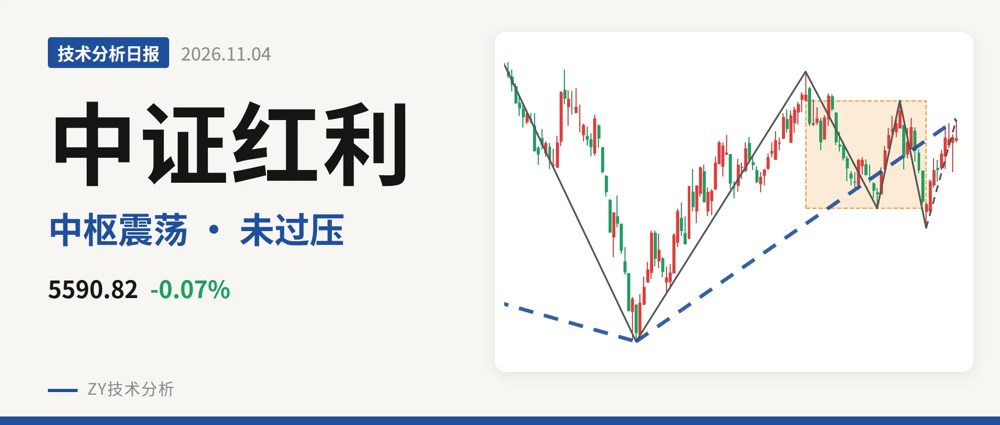
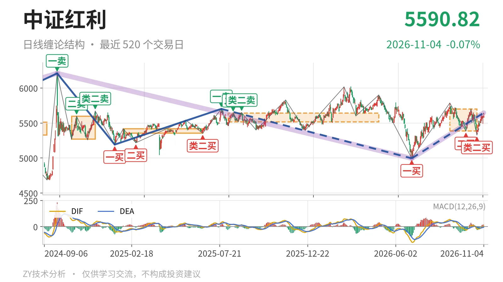
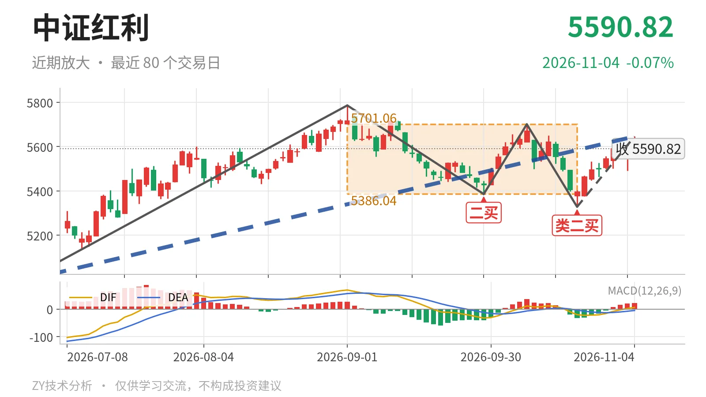

中证红利｜反弹逼近5701点，中枢上沿仍未突破

最近日线中枢 5386.04—5701.06点，收盘位于中枢之内
一句话：收于中枢内偏上，5701点未过，结构中性略偏强。
🧭 走势结构：日线仍是中枢震荡
日线级别仍处在9月1日以来笔中枢的震荡范围内，尚未走出单边。6月30日至11月4日的上涨线段从4995.49点走到5646.01点，内含5笔，线段还在延续，但上方5701点一线没被打开。2024年10月8日至2026年6月30日的更大级别下跌段没有结束前，当前上行只能先按日线反弹处理，反转条件不足。

📦 中枢与位置：位于最近中枢内偏上
最近日线笔中枢在9月1日至10月23日，区间为5386.04—5701.06点，中轴5543.55点，中枢尚未完成。最新收盘5590.82点落在中枢内部，距上沿约110点，距下沿约205点，位置偏上但并不贴边。相较2025年8月4日至2026年4月30日的中枢中轴5579.23点，最近中枢中轴下移到5544点附近，同时上下沿向外扩张，属于宽幅震荡，不是单边蓄势。
🔍 买卖点：三处买点仍只是笔级别
6月30日一买4995.49点、9月29日二买5386.04点、10月23日类二买5328.30点，所在下跌笔都已经结束，不是暂定买点。10月23日类二买后的反弹高点5646.01点，仍低于9月1日高点5786.14点，说明最近这段上行没有打开更大空间。由于2024年10月8日以来的更大级别下跌段还未结束，这三处买点暂时只能对应日线笔级别反攻。

📉 背驰：10月23日低点属于新低不新弱
10月14日至10月23日的下跌笔，从5701.06点落到5328.30点，价格低于9月1日至9月29日下跌笔的低点5386.04点，但绿柱面积只有53，前一次绿柱面积是561；DIF低点从-32.7抬升到-20.4，力度明显收敛。这是“新低不新弱”，也是10月23日类二买的结构来源。当前10月23日以来的上涨笔还没走完，最新DIF为5.7刚回到零轴之上，红柱面积65，价格未刷新5701点，暂不构成上行背驰。
🧩 关键位置观察：5701点一线是分水岭
上方关键位看5701点附近，这是最近中枢上沿；若能重新站上5701点，价格结构回到9月1日以来中枢上方，6月30日以来的上涨线段仍有望延续，下一压力看5786点附近。下方先看5386点附近，这是最近中枢下沿；回落不破5386点，则仍按中枢震荡处理。若跌破5386点并失守5328点，10月23日类二买被破坏，6月30日以来的上涨线段有结束风险。当前收在5544点中轴之上，但未过5701点，判断为中性略偏强。
⚠️ 本文为基于公开行情数据的缠论技术结构记录，由程序自动计算并生成，仅供学习交流，不构成任何投资建议。市场有风险，投资需谨慎。